THE FULL BATTLE
CONQUEST
Five points, one front, two ticket pools. The round lasts until one side runs dry.
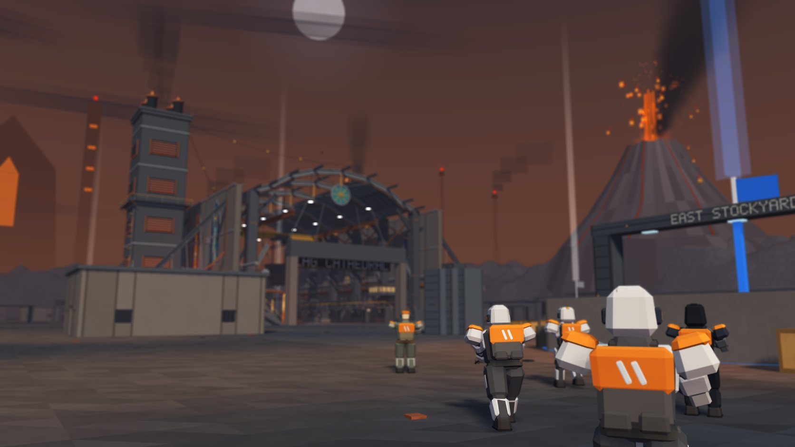
FREE / OPEN SOURCE / WINDOWS - LINUX - MACOS
An original low-poly multiplayer FPS. EMBER and COBALT fight over five control points strung across a valley, and only the front can be contested. The battle masses, breaks and moves.
HOW CONQUEST WORKS
Five points, A to E, run from one base to the other. You can only push a point that touches ground you already hold, so both sides always know where the fight is. Flanking means going round it, not ignoring it.
Capture speed scales with how many more of you are on the point, up to three. Lone wolves stall. Squads take ground.
Taking a point gives the whole team eight seconds of faster movement and half-time reloads. It is the moment to push the next one.
Reinforcements arrive in waves, and the more ground a team holds the longer its waves take. Winning stretches you thin.
Every death costs one, and holding more points bleeds the enemy. First side to zero loses.
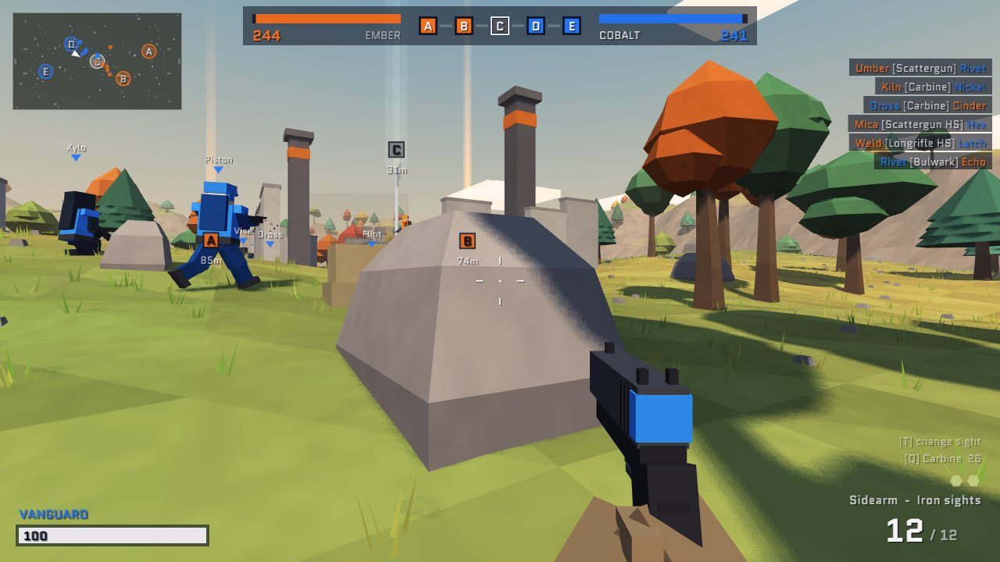
Twelve fighters. Orange on the shoulders and the pack lid.
Twelve fighters. Blue on the shoulders and the pack lid.
Every empty seat is a bot. Each person who joins takes a bot's place, so the teams stay twelve a side whether you play alone or with twenty-three friends.
GAME MODES
THE FULL BATTLE
Five points, one front, two ticket pools. The round lasts until one side runs dry.
8 MINUTES
No objectives. Redeploy in three seconds. First to eight kills per player a side, or the lead when the clock runs out.
12 MINUTES
Flags stand on B and D. Walk onto theirs and carry it home. Three captures wins.
180 TO WIN
C alone, open to both sides. A point for every second you hold it.
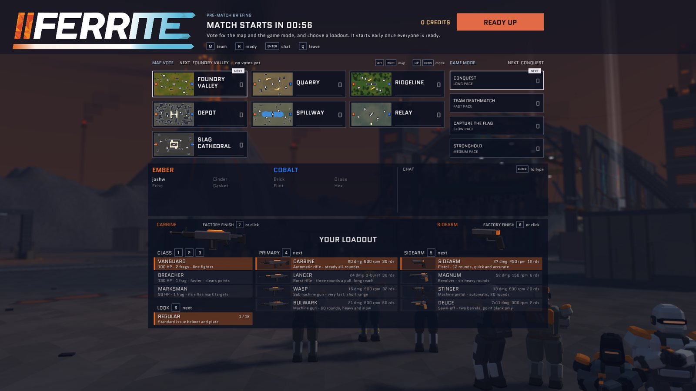
BATTLEFIELDS
Every map keeps the five-point line and mirrored routes for both sides. What changes is the ground between them, and what it does to you mid-round.
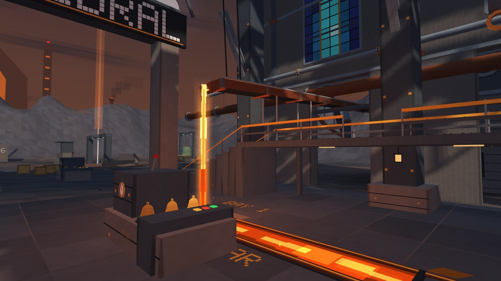
A casting nave under a live volcano. When it erupts, lava cuts the south side in two for half a minute.
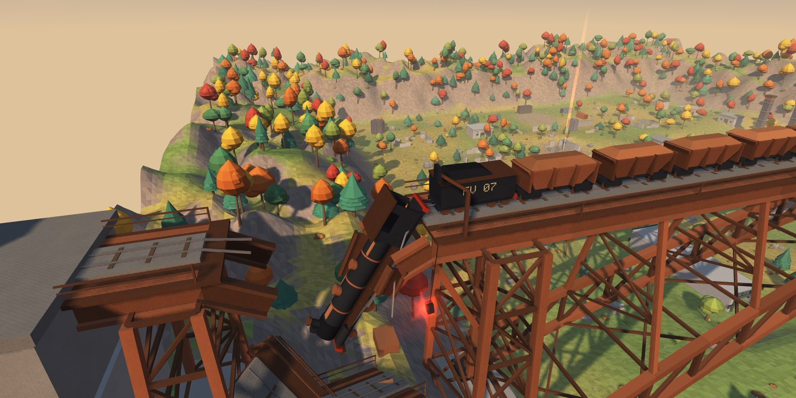
Autumn steelworks, boiler workshops and covered culverts, under a broken viaduct.
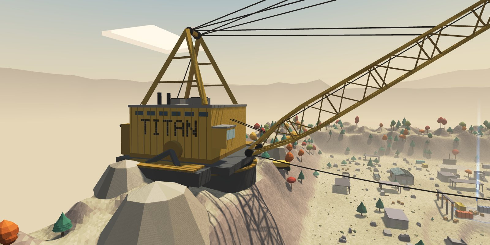
A terraced pit with an underground mine, headframes and a walking excavator overhead.
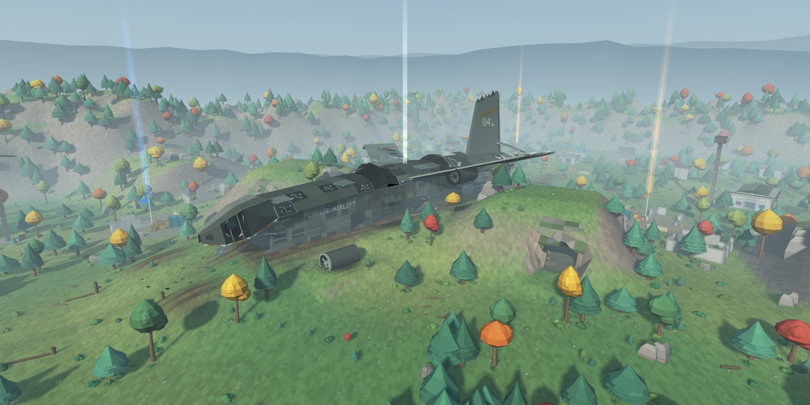
Pine passes and ranger lodges, with the Fallen Giant wreck broken in three across the saddle.
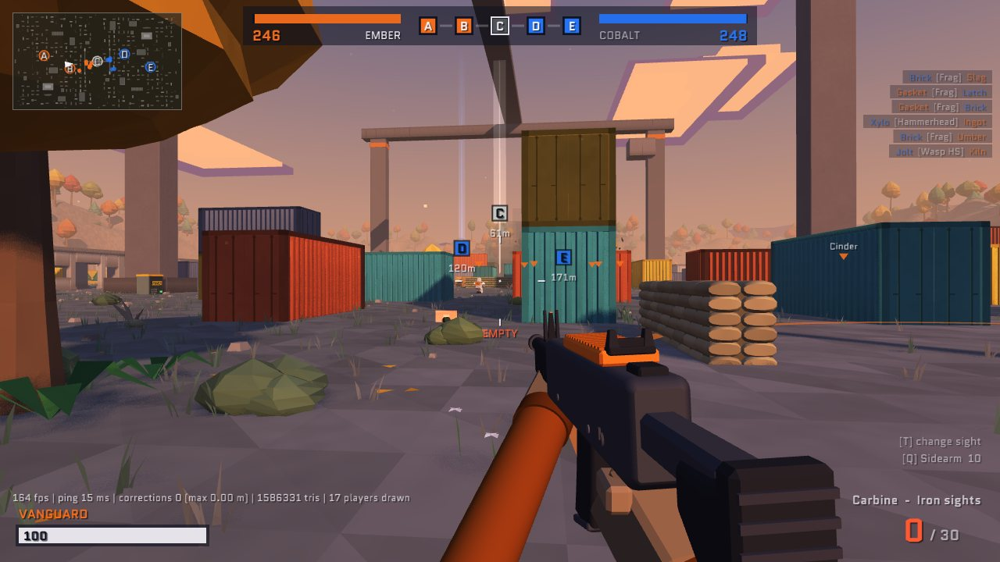
Container passages and dispatch warehouses under a giant working gantry.
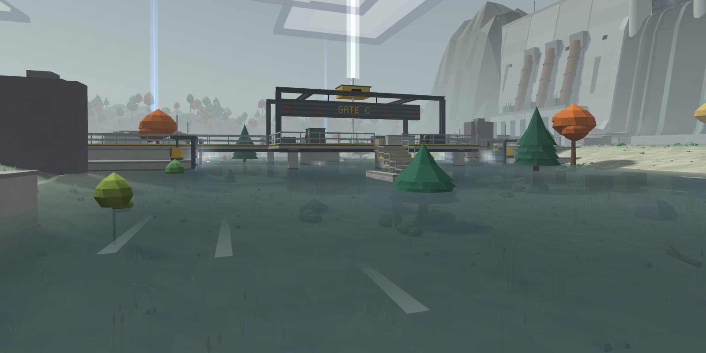
Drained waterworks. After each siren test the channel floods, and the water is deadly.
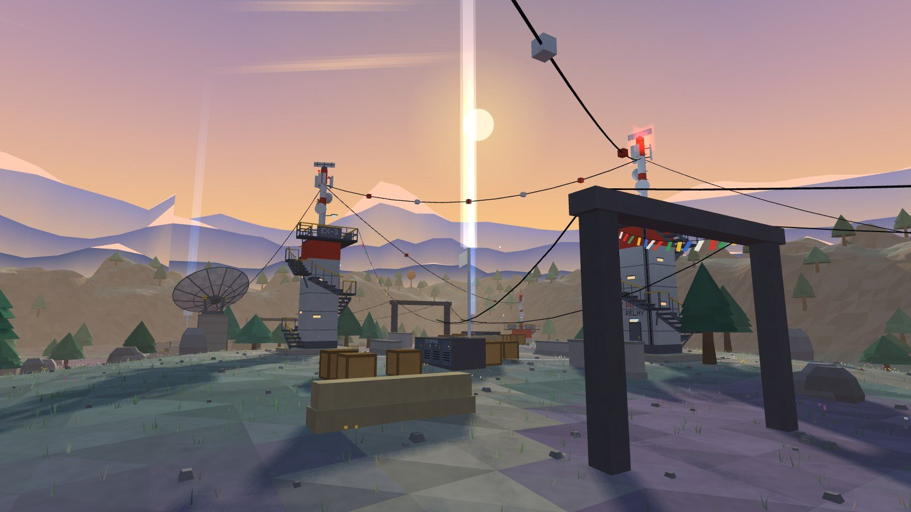
Four climbable towers, two great dishes, and a mast with a deck at 36.75 m.
The roots and boughs of a colossal strangler fig. Ride seedlines between the trunks and fight on walkways 18 m up.
ARSENAL
The all-rounder. Holds a point and clears one.
Carbine / Lancer burst rifle / Wasp submachine gun / Bulwark machine gun
Built for the inside of a building. Gets through the door first.
Scattergun / Rattler / Slugger / Drummer / Wasp
Anyone a scoped rifle hits is marked through walls for the whole team for six seconds.
Longrifle / Ranger / Hammerhead / Warden battle rifle
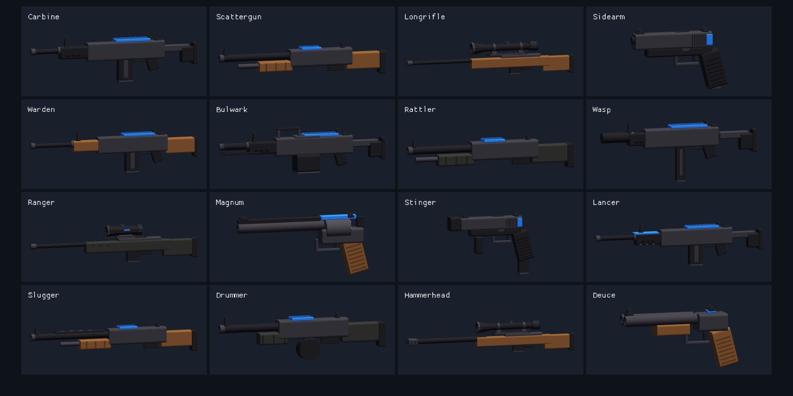
Every class carries a sidearm: the Sidearm pistol, the Magnum revolver, the Stinger machine pistol or the two-barrel Deuce. Cycle iron sights, red dot, holo and scopes with T.
FIELD NOTES
Bots send the same commands a player does and pass the same checks. They wait for the squad before stepping onto a point, save grenades for bunched enemies, and fight at the range their weapon is good at. Four difficulties, Recruit to Elite.
The three seconds before you went down, replayed through the eyes of whoever got you. Rebuilt from snapshots your client already had, so it costs the server nothing.
Wooden crates shatter under fire and grenades, for everyone at once. Crouch, slide and climb what is still standing.
Press P for a free camera with real depth of field and screenshots up to four times screen size. The key art on this page was shot with it.
Keyboard and mouse, a controller, or a touch screen with a floating stick and drag-look. Every key can be rebound, even mid-match.
The launcher checks for new releases, verifies each download against its published SHA-256, and rolls back on its own if a new build fails to start.
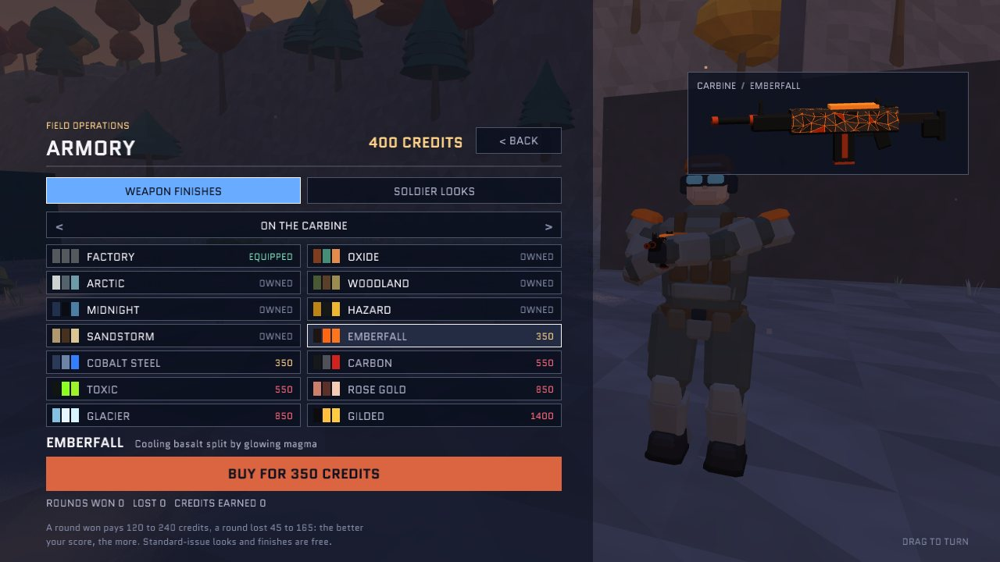
THE ARMORY
A round won pays 120 to 240 credits, a round lost 45 to 165, more for a better score. Spend them on weapon finishes from Oxide to Gilded, and on soldier looks. Nothing for sale changes how a gun shoots, and the standard kit is free.
PLAY ONLINE
Two public servers run around the clock, twelve a side with a bot in every empty seat. Open JOIN SERVER and they are listed under PUBLIC SERVERS with the map, who is on and your ping.
Or press HOST & PLAY to start a match from the game, or run the dedicated server on Windows, Linux, macOS or in Docker. Games on your network show up in JOIN SERVER on their own.
Open UDP 27500 for game traffic, and UDP 27499 if you want to be listed on the local network. Set the map, mode, rotation, bot count and difficulty from the command line.
# dedicated server, Slag Cathedral, Conquest ferrite-server --map slag --mode conquest # rotate two maps, cap the bots ferrite-server --rotation quarry,depot --max-bots 8 # or in Docker, from the repository docker compose -f deploy/docker-compose.yml up -d
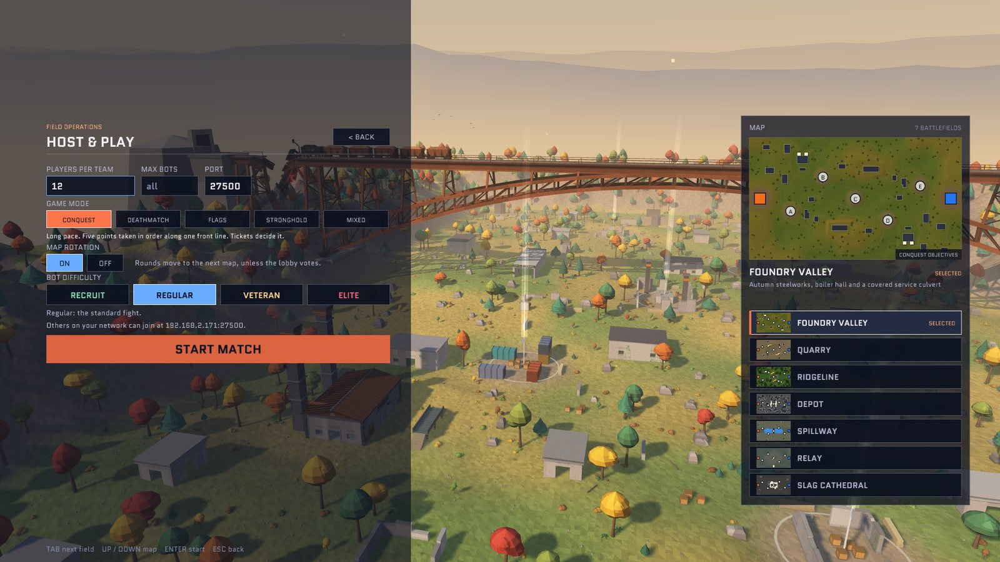
NEW IN 0.15 / MAP MAKER
A map editor inside the game. Start from a blank valley or remix any of the eight maps. Sculpt the ground, place blocks, trees and ready-made models on a 1 m grid, set the five objectives and both bases, then press F5 to play it with bots.
Left drag raises, right drag lowers, and every tool is one click away. How it works is in the design notes.
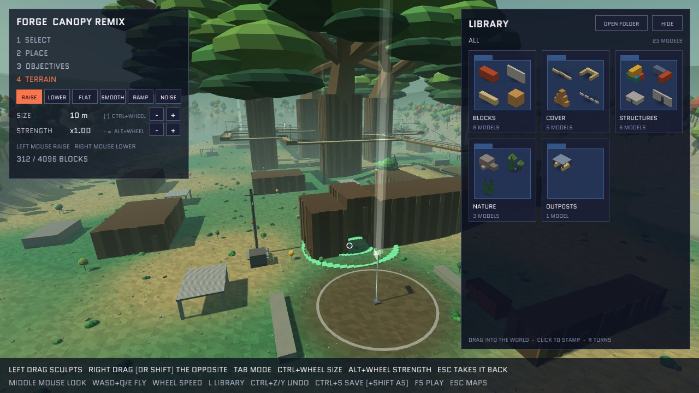
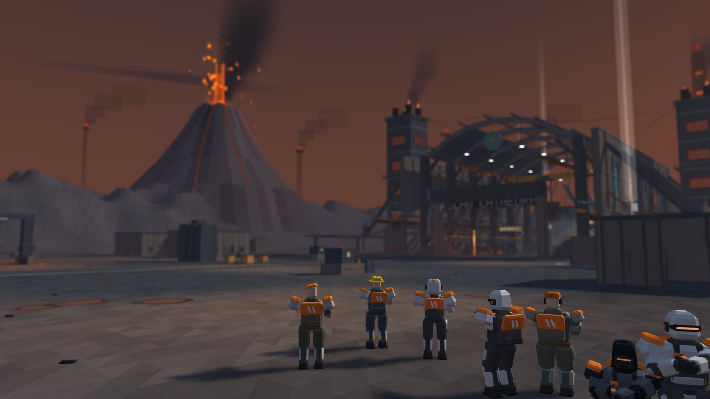
DOWNLOAD / v0.15.6
Free, MIT licensed, no account. Everyone in a match needs the same release, and the game updates itself when a new one is out.
Older releases, the checksums and the notes for each are on GitHub. The builds are not code-signed yet. Windows SmartScreen may call the installer unrecognised. On macOS, open the disk image and drag FERRITE to Applications; the first time, macOS says it cannot check it, so choose Open Anyway in System Settings > Privacy & Security. Prefer to build it yourself: cargo run --release -p ferrite.